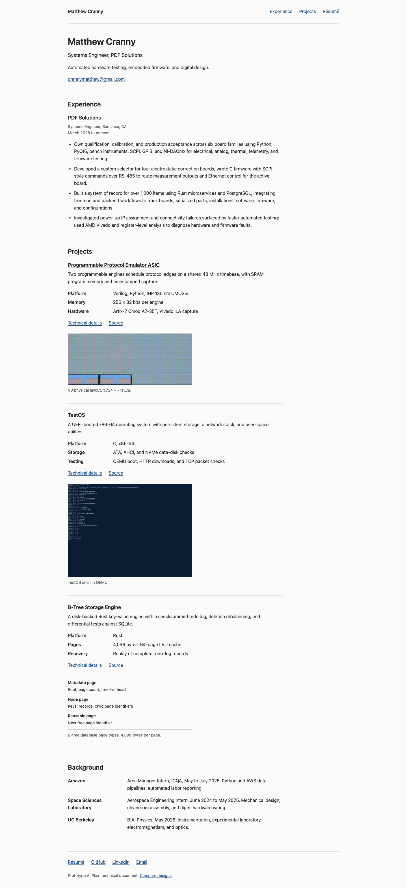

A. Plain technical document
A linear page with a comfortable reading measure, understated headings, and figures following their descriptions.

Three independent styles using the same homepage and ASIC sample. Open each page at full size to compare typography, information density, tables, and figures. All use light mode and system fonts.
Archived comparison: design B was selected. The site implementation adds separate-page navigation and filled/outlined buttons. These six samples retain the original comparison styles; links to other pages open the current site source.